L’estate del 2025 è stata la mia prima estate in carrozzina. Mi sentivo un po’ spaesata e, all’idea di partire per questa crociera, ero molto preoccupata. Avevo voglia di vedere tutti quei posti, ma facevo fatica a immaginare come me la sarei cavata una volta scesa dalla nave. Allora non avevo ancora il Triride. Ho fatto questo viaggio con la mia carrozzina manuale e con l’aiuto di mio marito, Gabriele, nei tratti più impegnativi.
A quel tempo non pensavo ancora di aprire In viaggio sulle mie ruote. Per questo il racconto che oggi aggiungo ai Grandi viaggi è un po’ diverso dagli altri. Quando studiavo le tappe cercavo risposte alle domande che mi stavano più a cuore. A Katakolon sarei riuscita a scendere dalla nave per visitare Olympia? Ad Atene sapevo che c’era un ascensore per salire sull’Acropoli, ma come sarei arrivata fino alla sua porta? A Istanbul avrei potuto entrare nelle moschee? E a Corfù sarei riuscita a fare il bagno in mare?
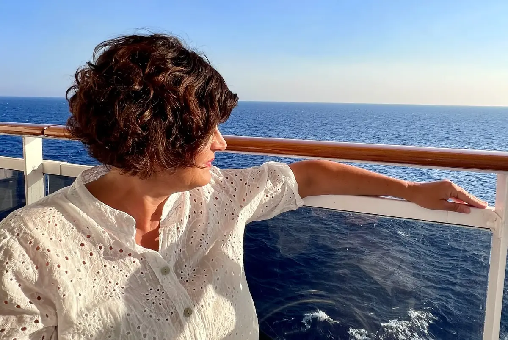
L’itinerario della crociera
| Data | Tappa | Orari da programma |
|---|---|---|
| Lunedì 18 agosto | Trieste · Imbarco | Partenza alle 19:00 |
| Martedì 19 agosto | Navigazione | Intera giornata |
| Mercoledì 20 agosto | Katakolon · Olympia | 07:00–15:00 |
| Giovedì 21 agosto | Pireo · Atene | 08:00–18:00 |
| Venerdì 22 agosto | Kuşadası · Efeso | 07:00–15:00 |
| Sabato 23 agosto | Istanbul | 10:00–23:00 |
| Domenica 24 agosto | Navigazione | Intera giornata |
| Lunedì 25 agosto | Corfù | 13:00–21:00 |
| Martedì 26 agosto | Bari | 07:00–14:00 |
| Mercoledì 27 agosto | Trieste · Sbarco | Arrivo alle 09:00 |
18 e 19 agostoDa Trieste verso la Grecia
Siamo partiti da Trieste la sera di lunedì 18 agosto. Avevamo davanti una giornata intera di navigazione lungo l’Adriatico prima di raggiungere la Grecia. La nostra prima meta era Olympia, ma per preparare quella visita avevo dovuto prestare attenzione a quattro parole scritte sul programma, proprio accanto al nome del porto.
Mercoledì 20 agostoKatakolon e Olympia
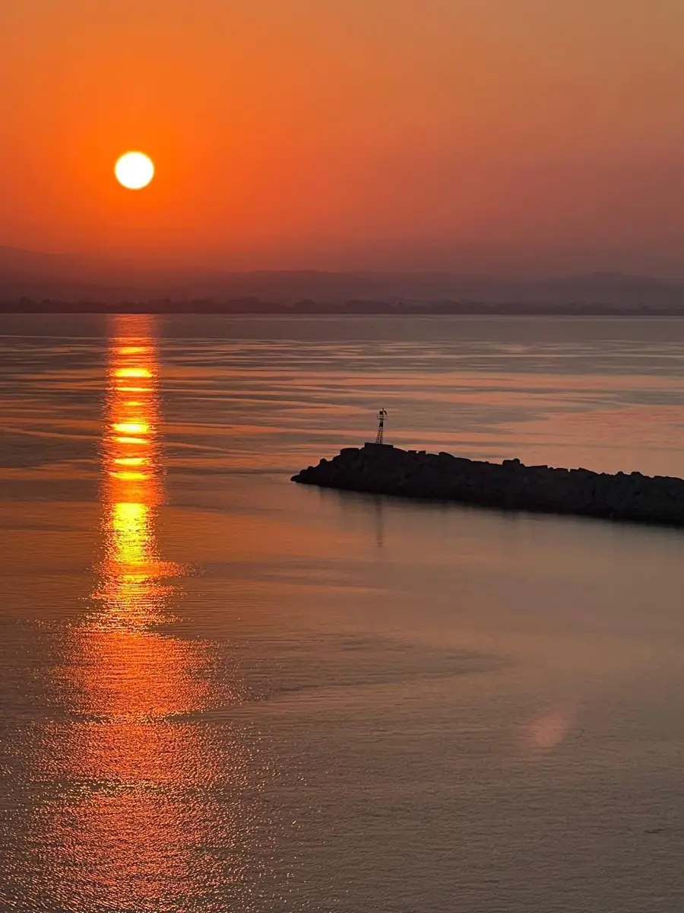
Per lo scalo di Katakolon c’era scritto «banchina o in rada». Per me, da quelle quattro parole dipendeva la possibilità di visitare Olympia.
Quando la nave attracca in banchina, si scende a terra attraverso la passerella. Quando invece rimane all’ancora in rada, per raggiungere il porto bisogna salire su una piccola imbarcazione che MSC chiama tender. La compagnia precisa che l’equipaggio non può trasportare le carrozzine sul tender né assistere personalmente i passeggeri nel salire o scendere dall’imbarcazione. Per chi, come me, deve restare sulla propria carrozzina, lo sbarco con il tender non è possibile.
Prima di partire non potevamo sapere se a Katakolon ci sarebbe stato posto in banchina. Lo avremmo saputo solo durante la navigazione e io, pensando a Olympia, mi ero quasi rassegnata all’idea di dover restare a bordo. Quel mercoledì, invece, la nave ha potuto attraccare e sono scesa anch’io. Poche ore dopo ero a Olympia, sulle mie ruote, tra le rovine del santuario dove si svolgevano gli antichi Giochi olimpici.
Il percorso all’ingresso del sito archeologico è in gran parte pianeggiante, con tratti in ghiaia fine e alcuni punti in cui il fondo è irregolare. Per superare quei tratti ho avuto bisogno dell’aiuto di mio marito Gabriele. Nell’area del sito sono presenti anche servizi igienici accessibili. Il Museo archeologico di Olympia è dotato di una rampa d’accesso e all’interno gli spazi sono ampi e pianeggianti.

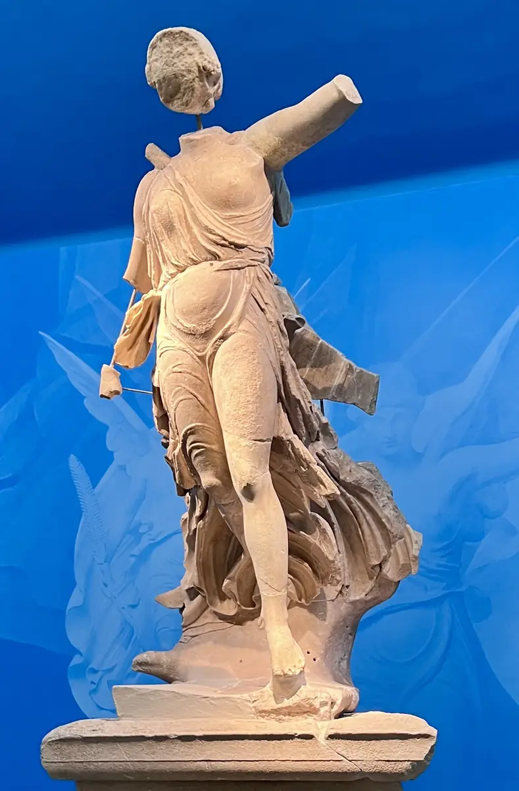
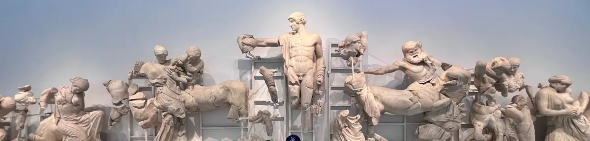

Giovedì 21 agostoDal Pireo all’Acropoli di Atene
Il giorno successivo siamo arrivati al Pireo, da dove abbiamo raggiunto Atene. Dell’Acropoli ci tengo a raccontarti soprattutto il tratto prima dell’ascensore, perché era quello che da casa facevo più fatica a immaginare.
Per raggiungere la golf cart ho dovuto percorrere in carrozzina un tratto in salita su una pavimentazione in pietra piuttosto sconnessa. Le lastre erano di dimensioni diverse e in alcuni punti lasciavano spazi larghi tra l’una e l’altra. Con la mia carrozzina manuale, l’aiuto di Gabriele è stato indispensabile per percorrere quel tratto.
Una volta raggiunta la golf cart, un addetto ci ha accompagnati fino all’ascensore panoramico, tutto in vetro. Mentre la cabina saliva potevo guardare fuori e vedere Atene dall’alto. Avevo passato tanto tempo a cercare di capire come arrivare fino a quella porta. Poi la porta si è chiusa, la cabina si è mossa e ho realizzato che stavo davvero salendo sull’Acropoli con la mia carrozzina.


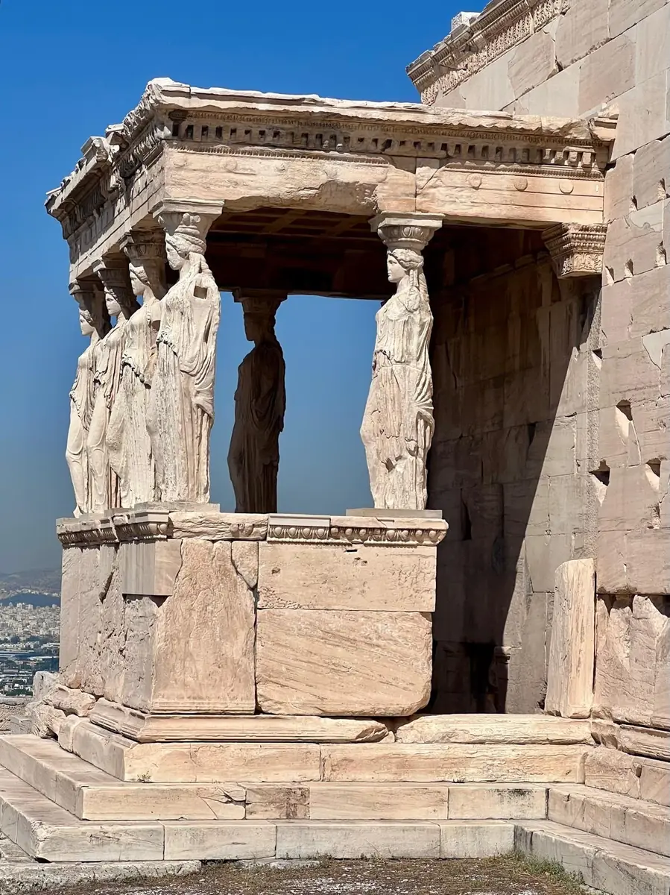
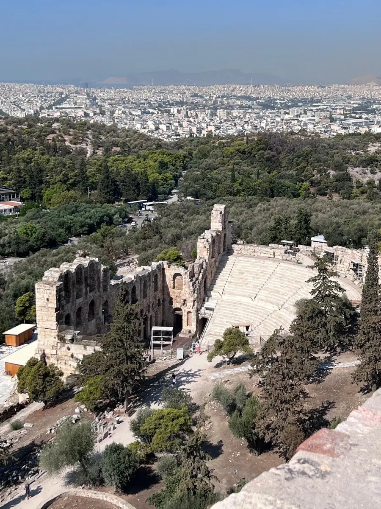
Una volta scesi dall’Acropoli, avevamo ancora un po’ di tempo per fare un giro nel centro di Atene. Per arrivare al Parlamento abbiamo preso un taxi e, una volta lì, ci siamo fermati a guardare il cambio della guardia.


In centro abbiamo trovato alcune strade sconnesse, che con la mia carrozzina facevo fatica a percorrere. Anche trovare un bagno accessibile ha richiesto un po’ di ricerca. Alla fine ne abbiamo trovato uno da Starbucks Coffee, prima di rientrare al porto.
Venerdì 22 agostoKuşadası ed Efeso
Per visitare Efeso avevamo prenotato una visita guidata. La nostra guida è venuta a prenderci direttamente al porto di Kuşadası e insieme abbiamo raggiunto il sito archeologico.
All’ingresso del sito archeologico ci sono bagni accessibili in carrozzina. Io ne ho usato uno durante la visita.
Il terreno era un po’ sconnesso e in alcuni punti ho avuto bisogno di una mano per proseguire. Con quell’aiuto sono riuscita ad arrivare fin sotto la facciata della Biblioteca di Celso. È così che la ricordo, dalla mia carrozzina: ero proprio ai suoi piedi e, per seguire le colonne fino in cima, ho dovuto alzare lo sguardo.
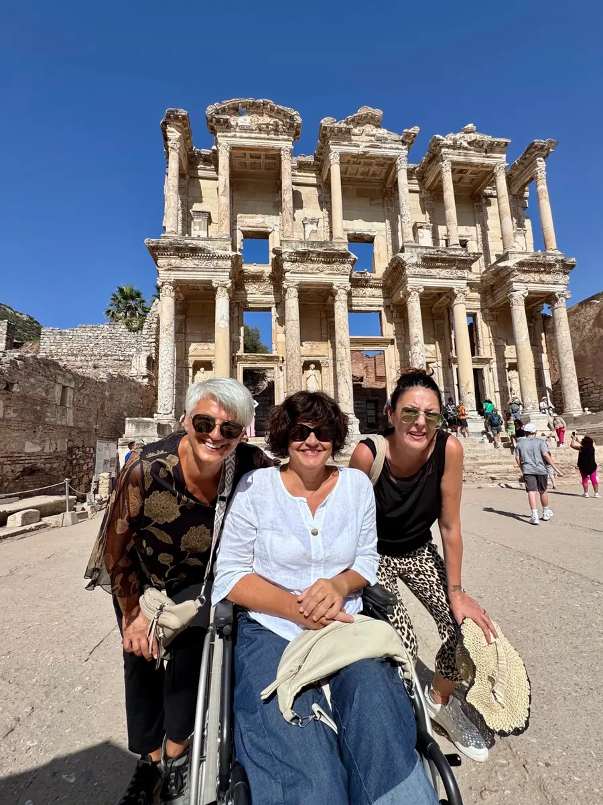

Tra le rovine di Efeso abbiamo fotografato un gatto rosso, sdraiato su un blocco di pietra con una zampa sul bordo. Alle sue spalle sedeva un altro gatto, bianco e tigrato. Proprio qui, vicino al Grande Teatro, è diventato famoso Garfield di Efeso, un soriano rosso soprannominato così per la somiglianza con il gatto dei fumetti.
Nel 2024 il giornalista Steve MacNaull lo trovò disteso su un frammento di colonna. La sua guida gli raccontò che Garfield si lasciava avvicinare volentieri e che alcuni addetti agli scavi gli si erano affezionati. Uno di loro aveva persino aperto il profilo Instagram @garfield_of_ephesus, dove i visitatori potevano condividere le foto dei loro incontri con lui. Chissà se il gatto che abbiamo incontrato era proprio Garfield!

All’interno del sito abbiamo visitato anche l’Ephesus Experience Museum, dove si racconta la storia di Efeso attraverso immagini e suoni. Si attraversano tre sale con proiezioni a 360 gradi. Tutt’intorno ricompaiono le strade, le case e le botteghe della città antica. Si percorre la via Arcadiana e si vede come appariva il Tempio di Artemide. Mi è piaciuto mettere insieme le due parti della visita. Fuori avevo percorso sulle mie ruote le strade del sito, dentro potevo immaginare quelle stesse strade quando le botteghe erano aperte e la gente le attraversava ogni giorno.

Dopo la visita a Efeso ci siamo fermati in un negozio di tappeti nel quartiere Atatürk, a Selçuk. Oltre ai tappeti esposti, abbiamo potuto vedere alcune artigiane al lavoro al telaio. Le abbiamo osservate mentre annodavano a mano i fili colorati. Mi ha colpito vedere come il disegno prendesse forma un nodo alla volta.
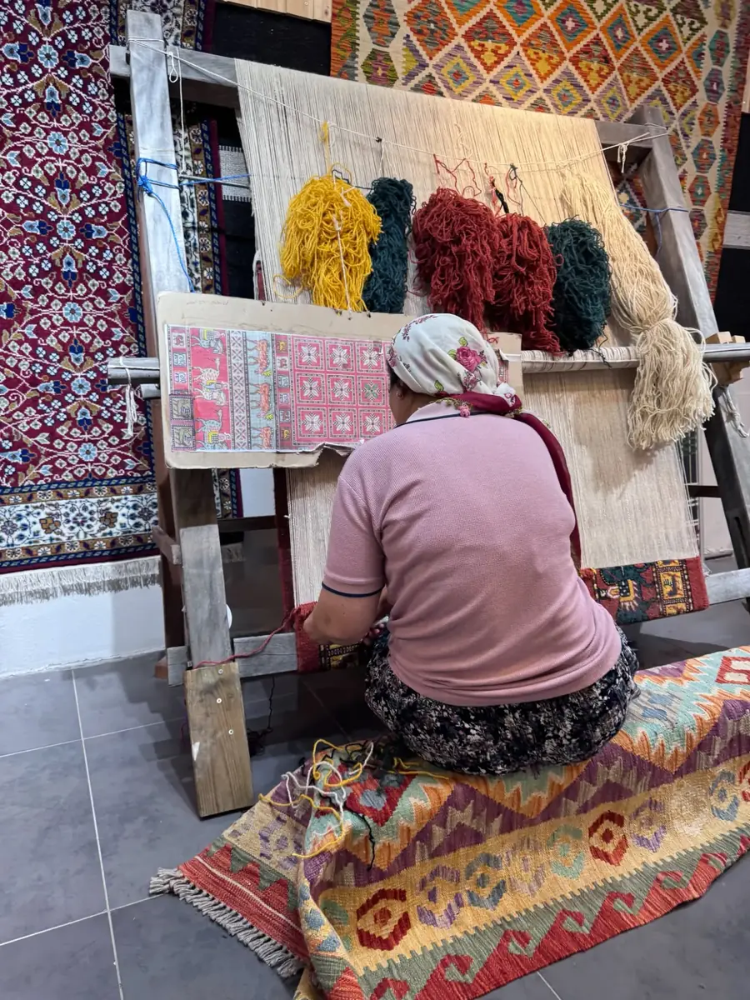
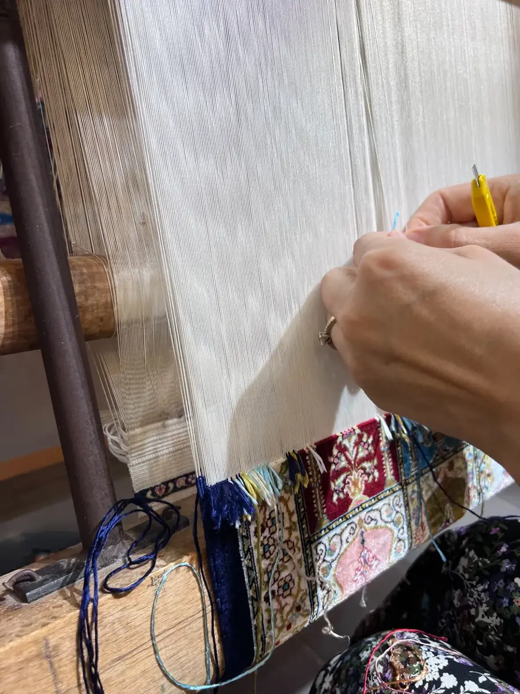
Prima di tornare a bordo, abbiamo fatto un giro per il porto di Kuşadası. L’ho trovato molto carino ed è stato un bel modo di concludere la giornata.
Notte tra il 22 e il 23 agostoLa sveglia alle tre per vedere i Dardanelli
A bordo ci avevano avvertiti che, verso le tre di notte, avremmo attraversato lo stretto dei Dardanelli e che dalla nave avremmo potuto vedere il ponte. Ci dispiaceva perderci quel passaggio dormendo, così prima di andare a letto abbiamo messo la sveglia.
Quando è suonata ci siamo affacciati al balcone della nostra cabina. Ed eccolo lì, il ponte sui Dardanelli, davanti a noi nel cuore della notte. Siamo rimasti sul balcone ad ammirare lo spettacolo mentre la nave proseguiva verso Istanbul. Per una vista così valeva davvero la pena svegliarsi alle tre!


Sabato 23 agostoIstanbul
Anche per Istanbul avevamo prenotato una visita guidata. Questa volta ci siamo spostati in pulmino per raggiungere i luoghi più importanti della città. Avevamo a disposizione la sosta più lunga della crociera, dalle dieci del mattino alle undici di sera. E ho avuto la risposta a una delle domande che mi ero fatta prima di partire: ho potuto visitare sia Santa Sofia sia la Moschea Blu.

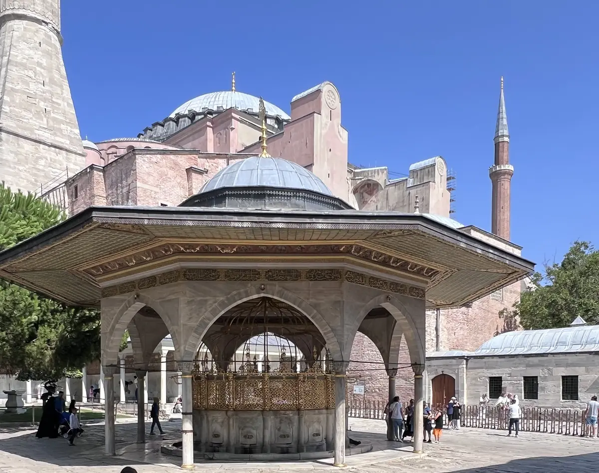
Grazie alla nostra guida ho potuto visitare in carrozzina il primo piano di Santa Sofia e accedere alla zona riservata alla preghiera dei fedeli musulmani.


Anche a Istanbul abbiamo fatto un po’ di fatica a trovare un bagno accessibile. Alla fine ne abbiamo trovato uno proprio all’ingresso della moschea di Santa Sofia, dove ci sono i bagni pubblici. Uno di questi è accessibile in carrozzina.
Alla Moschea Blu entrare è stato semplice grazie alla rampa all’ingresso. In entrambe le moschee, mentre gli altri visitatori si toglievano le scarpe, il personale ha avvolto le ruote della mia carrozzina nel cellophane. È un accorgimento per mantenere puliti i tappeti delle sale di preghiera, dove i fedeli si inginocchiano.
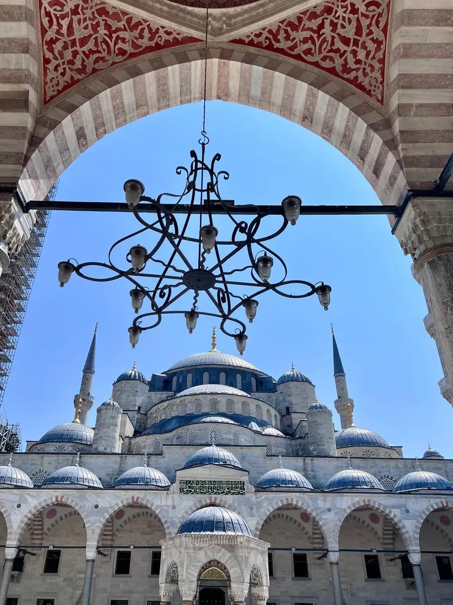


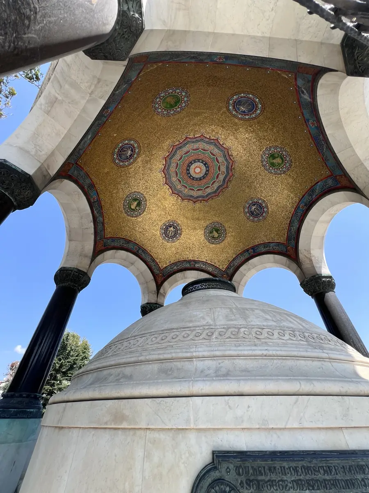
Nel nostro programma c’era anche la Cisterna Basilica (Yerebatan Sarnıcı), la più grande cisterna coperta di Istanbul. Quel giorno, però, l’ascensore era fuori servizio e con la carrozzina non ho potuto scendere a visitarla.
È stata la guida a proporci un’alternativa. Ci ha accompagnati alla Cisterna di Teodosio (Şerefiye Sarnıcı), più piccola e molto suggestiva. Qui sono potuta entrare con la mia carrozzina e assistere a uno spettacolo di luci e suoni. Le immagini venivano proiettate a 360 gradi tra le antiche colonne e potevo seguire la scena guardandomi intorno. Senza il consiglio della guida, probabilmente non avremmo scoperto questa cisterna.
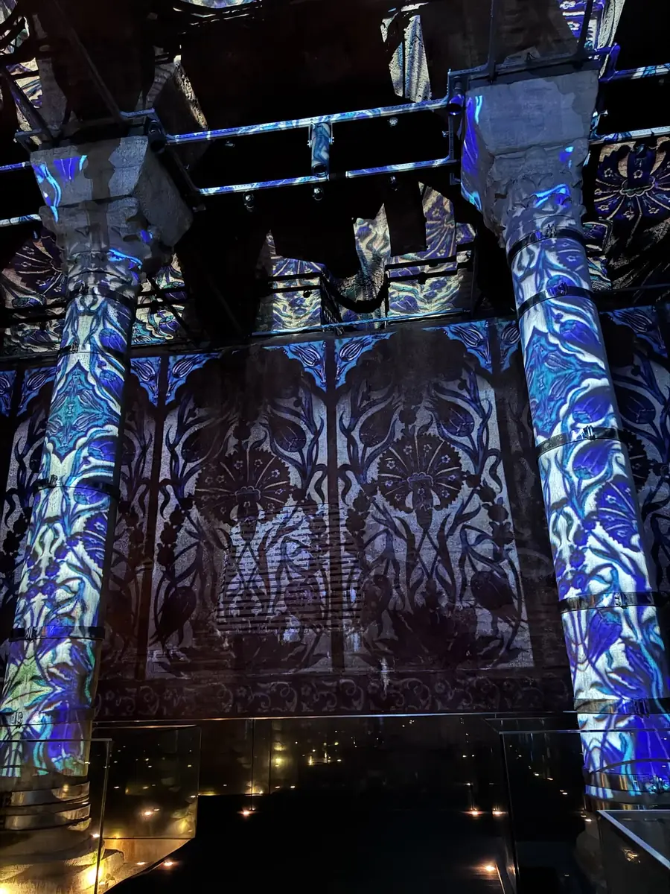
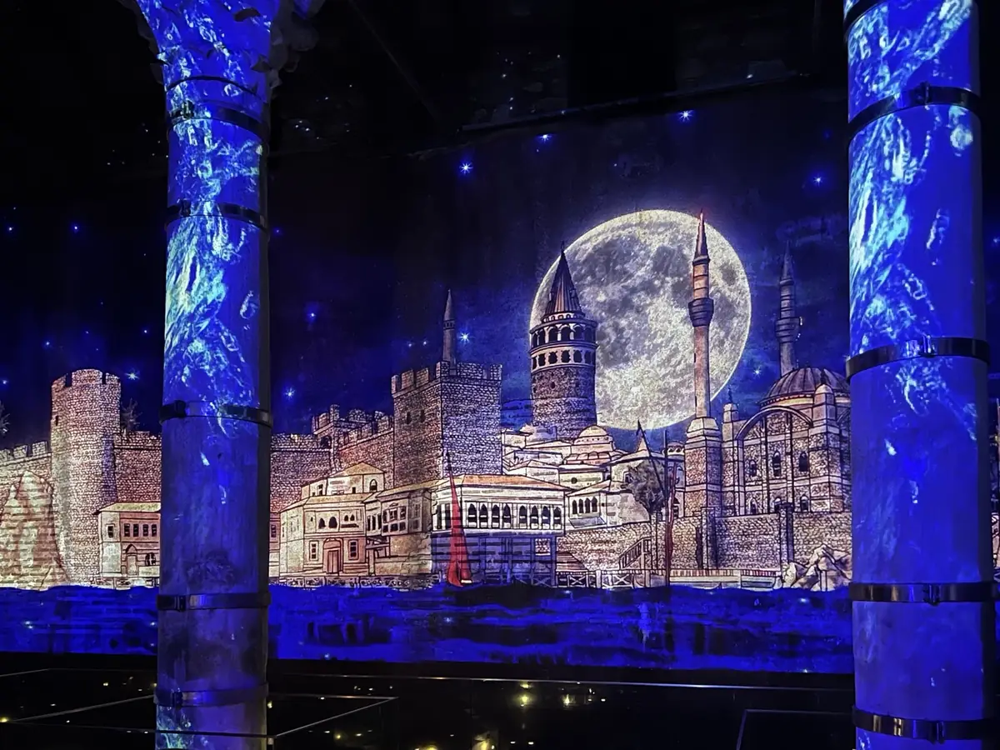
Abbiamo poi visitato i due mercati più famosi di Istanbul. Al Gran Bazar (Kapalıçarşı) abbiamo passeggiato tra i vicoli coperti e le botteghe di gioielli, tappeti e lampade. Al Bazar delle Spezie (Mısır Çarşısı), conosciuto anche come Bazar Egiziano, abbiamo curiosato tra i banchi di spezie, tè e dolci. Ho trovato entrambi i mercati accessibili e ho potuto percorrerne le vie interne con la mia carrozzina manuale.
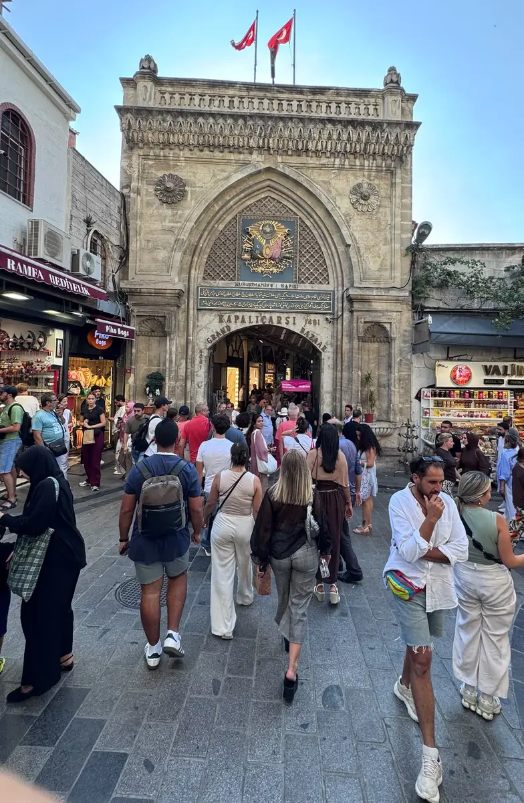


Quella sera, mentre aspettavamo di salpare, abbiamo fotografato Istanbul illuminata dalla nave.
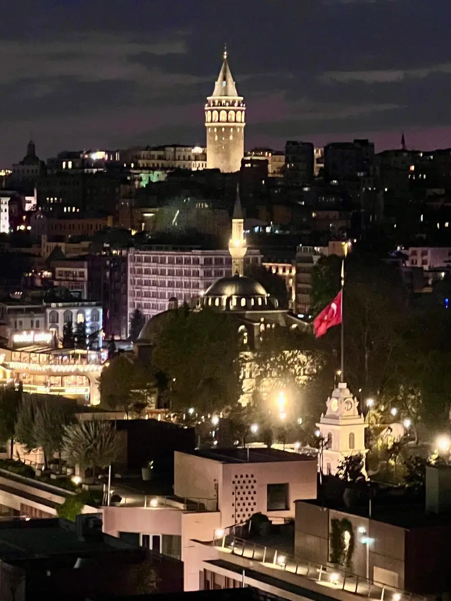
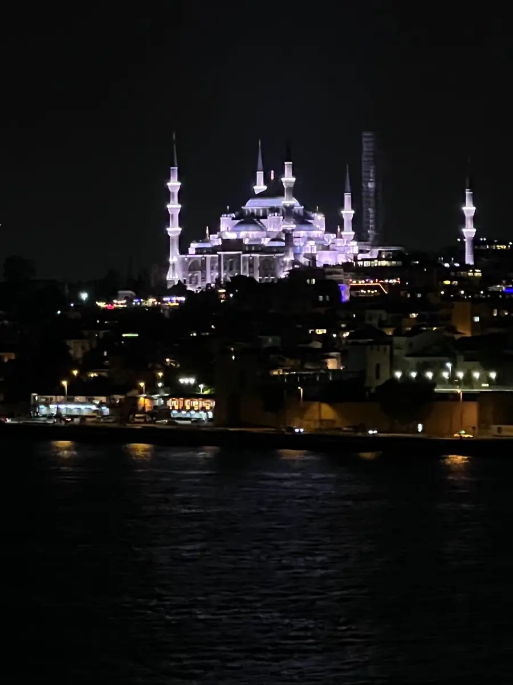


Lunedì 25 agostoCorfù · Un bagno nel mare di Paleokastritsa
Dopo la domenica trascorsa in navigazione, il lunedì siamo arrivati a Corfù all’ora di pranzo. Per questa tappa avevo un desiderio che mi accompagnava fin da quando avevo cominciato a studiare l’itinerario: riuscire a fare il bagno in mare. E quel pomeriggio, sulla spiaggia di Paleokastritsa, ci sono riuscita.

La vedi nella foto quella sedia sul binario? Si chiama SEATRAC ed è grazie a quella seduta che sono potuta entrare in acqua. Una volta in spiaggia mi sono trasferita dalla carrozzina alla sedia. Con un telecomando impermeabile l’ho fatta scorrere lungo il binario, dalla riva fin dentro il mare, fino a potermi immergere. Al ritorno ho usato lo stesso telecomando per tornare a riva.

Ed eccomi qua, finalmente a mollo nel mare trasparente di Paleokastritsa! È la foto che ho scelto per raccontare questa tappa. Prima di partire mi chiedevo come avrei fatto a raggiungere l’acqua. Quel pomeriggio ero in mare, a godermi il mio bagno a Corfù. 💙
Dopo il bagno ci siamo fermati a pranzo nel beach club proprio accanto alla spiaggia accessibile di Paleokastritsa. Nel locale abbiamo trovato anche un bagno accessibile in carrozzina.
Martedì 26 agostoBari Vecchia e la Basilica di San Nicola
A Bari abbiamo dedicato la mattinata a una passeggiata per Bari Vecchia, fino ad arrivare alla Basilica di San Nicola.

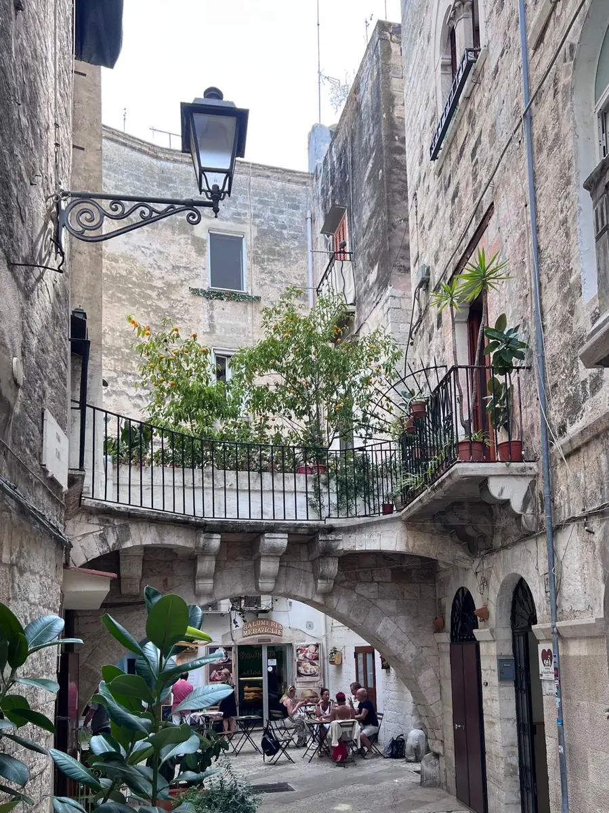
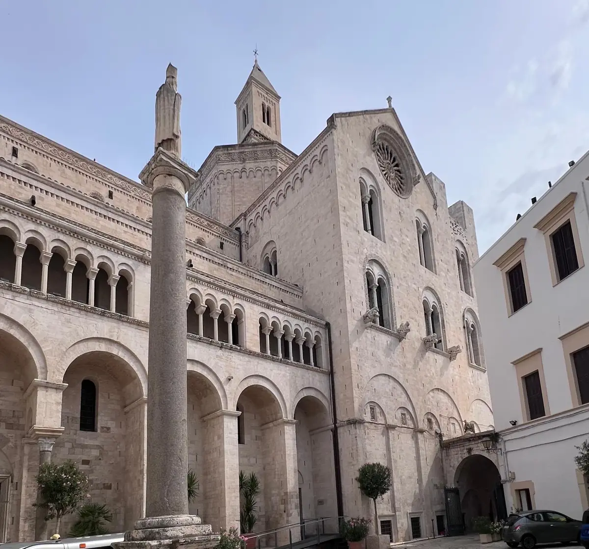
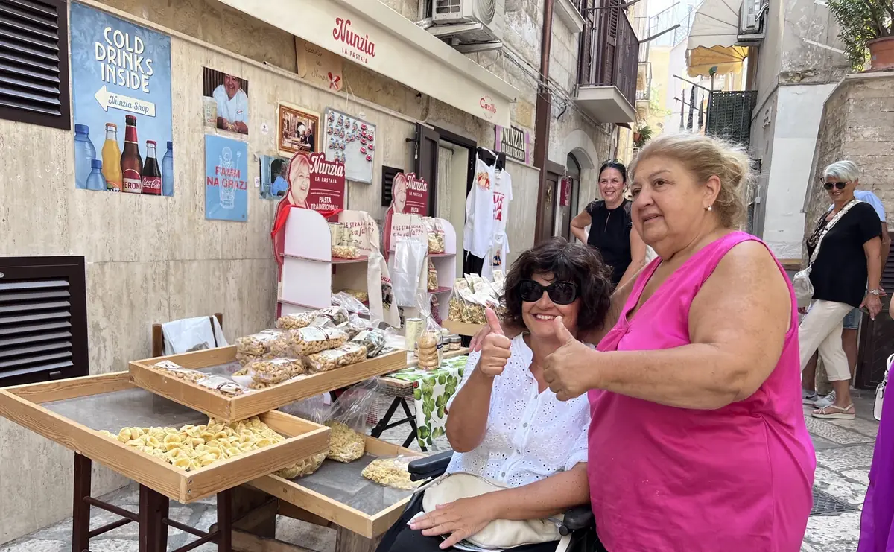
Ho potuto visitare l’interno della basilica in carrozzina. Ci tengo a raccontarlo perché, quando organizzo una gita, una delle prime cose che cerco di capire è se potrò entrare con la mia carrozzina. Leggere l’esperienza di chi c’è già stato mi aiuta a saperlo prima di partire.
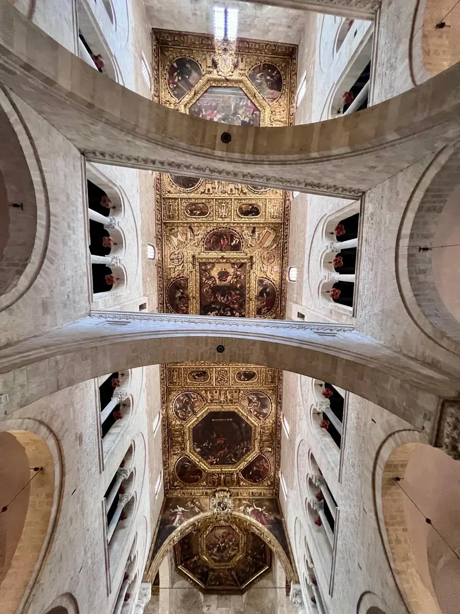
È stata l’ultima visita a terra della nostra vacanza. Nel primo pomeriggio siamo ripartiti e la mattina di mercoledì 27 agosto siamo rientrati a Trieste, nello stesso porto da cui eravamo partiti dieci giorni prima.
Cose da ricordare
Le informazioni da ricordare, raccolte qui per ritrovarle facilmente.
- Katakolon e Olympia. Sul nostro programma era indicato «banchina o in rada». Solo durante la navigazione abbiamo saputo che avremmo attraccato in banchina, perché tutto dipendeva dalla disponibilità di un posto in porto. Se la nave fosse rimasta in rada, con la mia carrozzina non avrei potuto scendere.
- Acropoli di Atene. Il tratto prima della golf cart è in salita, su un fondo in pietra irregolare. Con la mia carrozzina manuale l’aiuto di Gabriele è stato indispensabile. Una volta raggiunto il mezzo, il personale ci ha accompagnati fino all’ascensore.
- Efeso. La guida ci aspettava al porto di Kuşadası. Nel sito il terreno è sconnesso in alcuni punti. Con un po’ di aiuto ho raggiunto la Biblioteca di Celso e ho potuto visitare anche il museo immersivo.
- Istanbul. Ho potuto visitare in carrozzina sia la Moschea Blu sia Santa Sofia. A Santa Sofia, grazie alla guida, ho potuto accedere al primo piano, nella zona riservata alla preghiera dei fedeli musulmani. Per la Cisterna Basilica vale la pena verificare il funzionamento dell’ascensore il giorno stesso. Durante la nostra sosta era guasto. Ho potuto visitare in carrozzina la Cisterna di Teodosio e ho trovato accessibili sia il Gran Bazar sia il Bazar delle Spezie.
- Corfù. Durante la nostra visita, sulla spiaggia di Paleokastritsa ho trovato il sistema SEATRAC. Occorre trasferirsi dalla propria carrozzina alla seduta. Da lì ho potuto comandare io stessa, con il telecomando, sia l’ingresso in acqua sia il ritorno a riva.
- Bari. Nella mattinata di sosta ho potuto passeggiare per Bari Vecchia ed entrare in carrozzina nella Basilica di San Nicola.
I bagni accessibili incontrati
- Olympia Servizi igienici accessibili nell’area del sito archeologico.
- Atene · Starbucks Coffee Bagno accessibile in centro, trovato prima di rientrare al porto.
- Efeso Bagni accessibili in carrozzina all’ingresso del sito archeologico; ne ho utilizzato uno durante la visita.
- Istanbul · Santa Sofia Bagni pubblici all’ingresso della moschea: uno è accessibile in carrozzina.
- Corfù · Paleokastritsa Bagno accessibile in carrozzina nel beach club accanto alla spiaggia accessibile.
Questo racconto descrive la nostra esperienza in carrozzina dal 18 al 27 agosto 2025. Servizi, accessi e condizioni di sosta possono cambiare: per organizzare il viaggio controlla le informazioni aggiornate dei luoghi interessati.
Ci sono posti che non avrei mai creduto di poter visitare. Poi mi sono ritrovata a Olympia, sono salita sull’Acropoli di Atene, a Efeso ho alzato lo sguardo fin sotto la Biblioteca di Celso. A Istanbul sono entrata nelle moschee che desideravo vedere e a Corfù ho fatto il bagno in quel mare trasparente. E tutto questo quando ancora non avevo il Triride.
È per questo che ho voluto raccontarti questa crociera. Non porti mai dei limiti prima ancora di sapere che cosa è possibile fare. Se c’è un posto che sogni di vedere, prenditi il tempo per capire come arrivarci. Per me ha voluto dire informarmi sugli sbarchi, farmi dare una mano su una salita di pietra, scoprire che su una spiaggia di Corfù c’era una sedia capace di portarmi fin dentro il mare. È così che quei luoghi, che da casa mi sembravano fuori portata, sono diventati parte dei miei ricordi di viaggio.